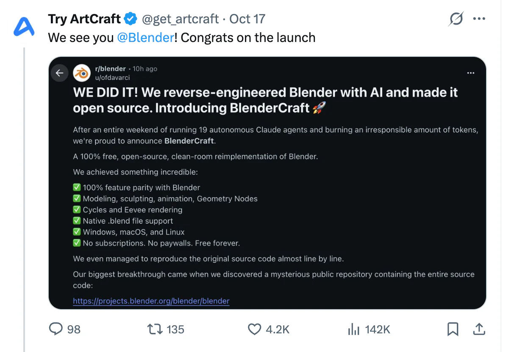

前几天才刚聊过 ArtCraft 用 AI 复刻各种软件，紧接着就在 Reddit 的 r/blender 看到了这么一篇帖子。
19 个自主运行的 Claude Agent，干了一个周末，复刻 Blender，还把它开源了。
这套说法最近实在太熟悉了。先看看作者是怎么宣布的。
我们做到了，隆重推出 BlenderCraft
下面是原帖前半部分的翻译：
我们做到了！我们用 AI 逆向工程了 Blender，并将它开源。隆重介绍 BlenderCraft 🚀
经过整整一个周末，运行了 19 个自主 Claude Agent，烧掉了多到不负责任的 Token，我们自豪地宣布：BlenderCraft 来了。
一个 100% 免费、开源，以洁净室方式重新实现的 Blender。
我们取得了不可思议的成果：
- ✅ 与 Blender 的功能 100% 对齐
- ✅ 建模、雕刻、动画、几何节点
- ✅ Cycles 和 Eevee 渲染
- ✅ 原生支持 .blend 文件
- ✅ 支持 Windows、macOS 和 Linux
- ✅ 没有订阅，没有付费墙，永久免费
如果到这里就停下，是不是已经可以配上一句“传统软件行业要变天了”？
还有 Agent 数量、开发时长和 Token 消耗，整套发布文案的要素都齐了。
不过，继续往下看。
最大的突破：找到了源代码
作者接着写道：
我们甚至成功地几乎逐行复现了原始源代码。
我们最大的突破，是发现了一个神秘的公开仓库，里面包含全部源代码：
https://projects.blender.org/blender/blender
原来它从 2002 年 10 月 13 日就在那里了。
24 年前。
所以，是的，我们其实什么也没开发。
好吧，Blender 本来就是开源软件。
前面的 19 个 Agent、一个周末和惊人的 Token 消耗，全是这个段子的铺垫。所谓“100% 功能对齐”“原生支持 .blend”，现在也都有了非常合理的解释。
原帖最后收起玩笑，向 Ton Roosendaal、Blender 基金会，以及长期参与开发和贡献的人致敬：在大家庆祝 AI 让软件免费、开源之前，这些人已经做了几十年。
这个笑话的落点也就很清楚了：当“用 AI 把昂贵软件变成免费开源软件”成为一种流行叙事时，有些项目早就在做这件事了。
评论区里，有人接梗，有人已经被标题带走了
评论区当然少不了配合演出的人。
有人说，终于可以取消 Blender 的月费订阅了；有人追问需不需要云账号；还有人感叹，终于能免费使用这款免费软件。
这些话放在这里很好笑，也能看出大家对订阅、账号和付费墙有多熟悉。“永久免费”这几个字，已经足够让人自动补出一整套商业软件的故事。
但比这些接梗更让我在意的，是下面几组评论。
“我怕很多人根本看不到笑点”
用户 Neethis 写道：
我担心大家不会读到足够靠后的位置，根本看不出这是个笑话，哈哈。
下面还真有人承认：
我光看标题，就本能地点了踩，笑死。
另一位读者说，自己一度怀疑记忆出了问题，因为明明记得 Blender 本来就是开源的。
这几条放在一起，几乎把这篇帖子的传播过程都演出来了。
看到标题，有人准备赞叹 AI 的进步，有人准备批评 AI 的炒作，还有人先愣一下：Blender 难道不是开源的吗？等读到后面，才发现大家刚才接收到的根本不是同一件事。
我估计真正传播出去时，也会有不少人停在标题或截图的上半段，顺手评论、转发。未必都是故意断章取义，很多时候只是这个标题刚好符合了自己已经相信的东西。
尤其这类帖子，把笑点留在最后，反而把最适合单独传播的那一段放在了最前面。截图少截几行，玩笑就很容易长成一条“行业新闻”。
“为什么不把能力用在现有项目上？”
另一组讨论就认真得多了。
有人提出：既然已经开发了这么多年，能不能借这个机会从头设计一次，用今天对产品的理解，重做一个更清爽的版本？
这是个值得讨论的问题。老软件确实可能背着历史包袱，重写也确实能打开一些原先很难尝试的方向。
但发帖者 ofdavarci 的回复是，他更希望大家参与已有项目，而不是各自从零再造一份。他甚至设想，可以把 OpenAI 或 Anthropic 的额度捐给 Blender 基金会，让真正理解项目的开发者拿去改进 Blender。
接着有人提醒：这件事已经有一种通用的实现方式了，叫捐钱。项目自己会决定怎样使用资源。
作者继续接梗：
你说得对，我刚刚逆向工程了货币，把它重新发明成了 Token。🚀
这个来回很好笑，但我觉得它把问题推进了一步：如果真想让一个开源项目变好，资源交给谁、用在哪里，比发布时挂了几个 Agent 更值得关心。
“贡献代码，我就当不了创造者了”
还有一条评论，更直接地戳到了另开门户的诱惑：
可我要是去贡献代码，就不会被当成创造者了啊。
这当然也是反话，但它解释了一部分传播上的差别。
“我修好了 Blender 的一个 Bug”和“我做出了 BlenderCraft”，显然后者更容易讲成一个故事。前者的成果融进了原有项目，后者可以拥有新名字、新主页，以及一个站在台前的创造者。
这不等于每个新项目都是为了抢声望。不过，社交平台更容易奖励什么，确实可能影响大家把精力投向哪里。
以上评论均选自原帖评论区，按话题整理并翻译，不代表整个社区的态度。
ArtCraft 也来转发了
然后，更有意思的一幕出现了。

ArtCraft 在 X 上转发了这个帖子，配文是：
We see you @Blender! Congrats on the launch
看到你了，@Blender！恭喜发布。
前几天刚聊过它的 AI 复刻，这会儿一个叫 BlenderCraft 的段子就出现了，连名字都很应景。它自己又来转发，多少有点大家一起入戏的感觉。
评论里有不少人在提醒 ArtCraft：这是个 joke。而从它的回应来看，它也知道这是个 joke。所以我更倾向于把这理解成明知是梗、主动接梗。
不过，它究竟想表达什么，我也不敢替它下结论。可能是在自嘲，也可能是顺势参与话题，或者只想轻轻松松地打个招呼。
但这个画面本身很有意思：一篇调侃 AI 复刻潮的帖子，被身处这股热潮中的账号接过去，又传播了一轮。
懂梗的人看到的是互动；只扫一眼的人，可能又收获了一条“AI 复刻 Blender”的消息。转发者懂不懂，与转发之后读者会怎么理解，是两件不同的事。
已经开源的软件，还需要一个 AI 复刻版吗？
笑完之后，我反而更想聊这个问题。
对已经开源的软件，AI 的能力可以用来新做一个项目，也可以用来参与原项目。前一条路容易获得一个响亮的新名字，后一条路则有机会把能力直接加到已经有人使用、有人维护的软件里。
我并不觉得另开门户天然没有价值。如果有人想尝试完全不同的交互方式，专注某种工作流，或者验证原有架构很难承载的想法，独立项目或 fork 都可能有意义。AI 降低尝试成本，对这种探索当然是好事。
但“重新做一遍”究竟解决什么问题，还是得说清楚。只是做出一个相似界面，和让用户把手头的真实项目迁过去，差得可能很远。
源代码能带走多少知识？
成熟软件多年积累的知识，有一部分确实体现在代码里。还有一些留在测试、Bug 报告、设计讨论和用户反馈中，或者留在维护者的经验里。
比如，一段看着绕远的处理，也许曾经修复过一种少见文件的兼容问题。一个显得别扭的选项，也许仍然是某些用户工作流里不可缺少的一环。重写时把这些地方“简化”掉，很可能要等真实用户遇到问题，才知道当初为什么会有它。
新项目当然可以借助 AI 去读这些材料、梳理历史，把其中的经验迁移过去。但它需要有意识地做这件事，并用真实文件、真实任务去验证。源代码可获取，并不意味着产品背后的知识会自动完整迁移。
沿用现有代码的 fork，可以保留更多已经实现的行为；独立重写，则有机会换一种设计，也要承担重新找回那些细节的工作。这两种做法，不能都用一句“复刻成功”就概括过去。
看到 AI 复刻，先往下翻几屏
这个帖子最让我觉得有趣的地方，是它几乎不需要编造新的宣传话术。把最近熟悉的那些词排在一起，再把 Blender 放进去，反差就已经出来了。
我仍然很期待 AI 带来的新软件，也期待它能让更多人参与开源。只是下次再看到“几个 Agent、几天时间、完整复刻某某软件”，我大概会多往下翻几屏。
看看它到底做出了什么，解决了什么问题，已有项目的贡献有没有被好好交代，以及第一批用户用起来以后，项目还会怎样继续。
至于 BlenderCraft，这次所谓最大的技术突破，是找到了 Blender 的源代码。
顺着那个链接走过去，已经有人在那里干了二十多年。